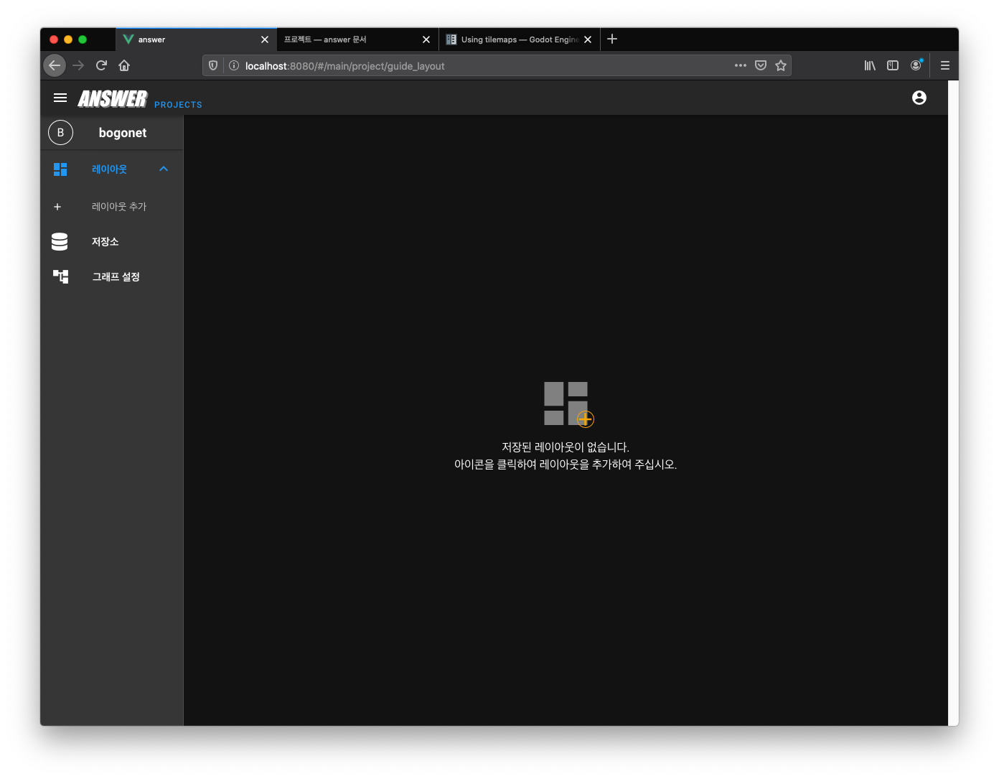
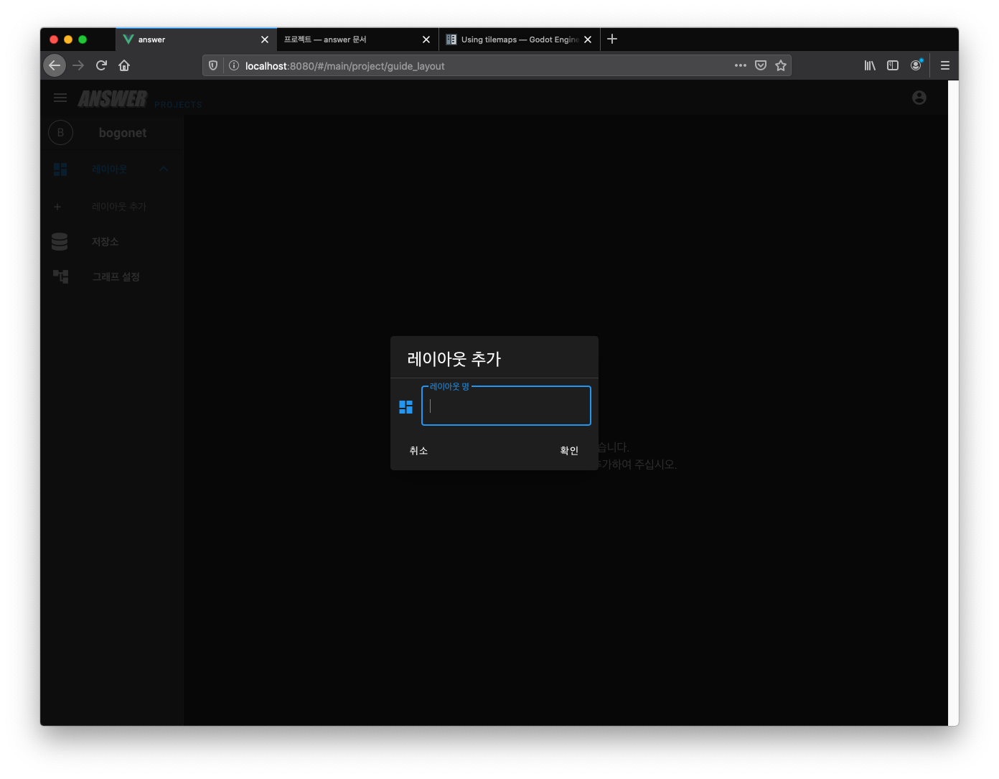
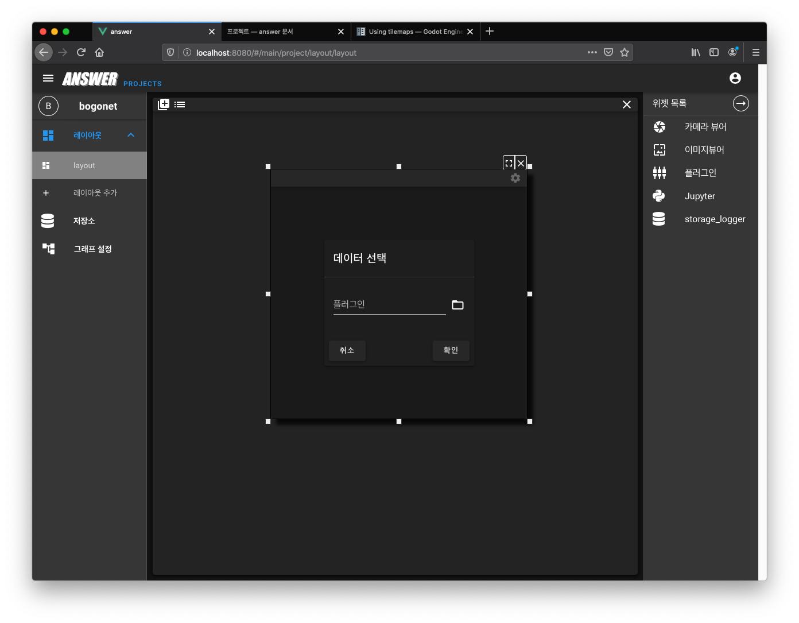

대시보드¶
대시보드는 모니터링, 사용자 설정, 리소스 관리 등을 위한 위젯(Widget)을 배치할 수 있는 공간입니다.
새로운 레이아웃¶
레이아웃은 배치된 위젯의 프리셋 역할을 합니다. 사용자는 원하는 레이아웃에 원하는 방법으로 위젯을 배치할 수 있습니다.
레이아웃이 존재하지 않다면 다음과 같은 화면이 출력됩니다.
중앙의 《+》 버튼 또는 좌측의 《레이아웃 추가》 버튼을 클릭하면 새로운 레이아웃을 생성할 수 있습니다.
위젯 배치¶
위젯은 사용자와 상호 작용할 수 있는 인터페이스 요소 입니다.
새로운 레이아웃이 생성되면 《빈 패널》 을 확인할 수 있고, 빈 패널의 《+》 버튼을 클릭하면 우측에 《위젯 목록》 이 출력됩니다.
원하는 위젯을 《빈 패널》 위에 드래그-앤-드롭 하면 해당 위젯이 배치됩니다.
이 경우 《플러그인 위젯》 을 사용했습니다. 《플러그인 위젯》 은 외부의 웹 페이지를 임베딩 할 수 있는 위젯입니다.
원하는 URL을 입력하면 외부 페이지가 위젯에 포함됩니다. 원하는 YouTubue 의 《퍼가기》 주소를 사용하면 다음 화면과 같이 동영상 재생이 가능합니다.